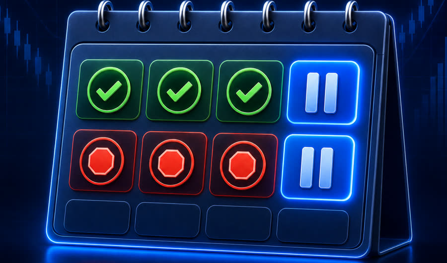

Что решает риск-менеджмент
- стоит ли вообще заходить в позицию
- каким объемом заходить
- где поставить стоп-лосс
- где зафиксировать прибыль
- когда остановиться и сделать перерыв
Не заработать максимум на одной сделке. Задача - сохранить депозит, пройти длинную серию сделок и остаться в игре.
Когда заходить, а когда нет
Мы с командой всегда даем диапазон входа (или конкретную цену), например 📍 4396.
Цена полетела в профит без тебя
Для BUY вверх, для SELL вниз. Не заходи: риск становится больше, а результат хуже.
Цена ушла немного в минус от входа
Для BUY вниз, для SELL вверх, но стоп еще не зацепила. Можно заходить: риск меньше, результат лучше.
Стоп ставим сразу
Стоп-лосс ставишь сразу после входа или вместе с открытием сделки. Его уровень уже есть в сетапе, который мы даем в канале.
Стоп можно
- подтянуть в безубыток
- перевести в прибыль
- оставить на первоначальном уровне
Стоп НЕЛЬЗЯ
- отодвигать дальше в минус
- увеличивать после открытия
- убирать с надеждой «сейчас развернется»
- превращать сделку в «долгосрочную инвестицию»

Что такое лот
До открытия сделки ты должен точно знать, сколько потеряешь, если цена дойдет до стопа.
В отличие от крипты, здесь мы торгуем не в долларах, а в лотах. Лот - это размер позиции. Это НЕ сумма депозита, не размер риска и не плечо. Лот лишь определяет, насколько сильно меняется результат при движении цены.
В MetaTrader 1 лот = определенное количество актива, указанное в параметре Contract size. Его задает брокер.
Валютные пары (EUR/USD)
| Объем | Размер позиции | Стоимость 1 пункта |
|---|---|---|
| 1.00 лота | €100 000 | $10 |
| 0.10 лота | €10 000 | $1 |
| 0.01 лота | €1 000 | $0.10 |
Пункт - это стандартный pip, например движение EUR/USD с 1.1000 до 1.1001.
Пример EUR/USD
Купил EUR/USD по 1.1000, Stop Loss на 1.0950. Расстояние до стопа - 50 пунктов.1.00 лота → риск ≈ $500 · 0.10 лота → ≈ $50 · 0.02 лота → ≈ $10 · 0.01 лота → ≈ $5
Депозит $1 000 и допустимый риск $10 → тебе подходит 0.02 лота.
Золото (XAU/USD)
| Объем | Количество золота | Результат при движении на $1 |
|---|---|---|
| 1.00 лота | 100 унций | ±$100 |
| 0.10 лота | 10 унций | ±$10 |
| 0.01 лота | 1 унция | ±$1 |
Пример с золотом
Покупка XAU/USD по $2 500, Stop Loss $2 490. Расстояние до стопа - $10. Если 1 лот = 100 унций:1.00 лота: $10 × 100 = $1 000 риска · 0.10 лота: $100 · 0.01 лота: $10
Депозит $1 000 и допустимый риск $10 → открываешь 0.01 лота.
Посчитай свой лот
Contract size в калькуляторе: золото 100, серебро 5 000, валютные пары 100 000. Если у твоего брокера другой, смотри спецификацию инструмента в MT5.
Когда можно выйти раньше
Иногда после входа ситуация на рынке меняется:
- выходят важные новости
- появляется резкий встречный объем
- цена ломает структуру не в твою сторону
- уровень, от которого ждали реакцию, не удерживается
- первоначальный сценарий теряет актуальность
Тогда сделку можно закрыть руками частично или полностью, либо подтянуть стоп в прибыль, чтобы защитить уже полученное движение.
Объективное изменение ситуации - это одно, а обычный страх потерять открытую прибыль - другое. Если сценарий актуален, не управляй позицией на эмоциях. Лучше недозаработать, чем потерять.
Правило трех сделок
После трех стопов подряд хочется срочно отыграться. Начинаешь видеть входы там, где их нет, увеличивать риск и нарушать собственные правила.
После трех тейков подряд другая опасность - ощущение, что ты уже понял рынок. Анализ становится поверхностным, а входы импульсивными.
Первая сделка кажется случайностью, вторая - совпадением, а после третьей мозг уже ждет продолжения серии. Статистически четвертая сделка не должна быть такой же, но твое восприятие уже изменилось.

Поэтому после трех тейков или трех стопов подряд:
- закрой терминал
- сделай перерыв
- пересмотри скриншоты сделок
- проверь, придерживался ли стратегии
- оцени свое эмоциональное состояние
- возвращайся к торговле только после полной перезагрузки
Торгуй вместе с нами 🧡
В комьюнити каждый день сетапы с точкой входа, стопом и тейками, сопровождение каждой сделки и менеджер, который поможет с первыми шагами.
Присоединиться через @gudzchamp_fx_bot